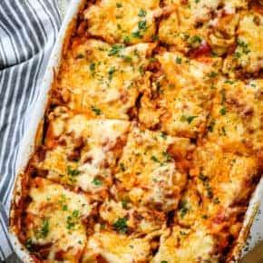

Lasagna

Description
Homemade lasagna is a classic, delicious dinner that every family
should have in thier recipe rotation.
Ingredients
- 12 lasagna noodles uncooked
- 4 cups mozzarella cheese shredded and divided
- 1/2 cup parmesan cheese shredded and divided
- 1/2 pound lean ground beef
- 1/2 pound Italian sausage
- 1 onion diced
- 2 cloves garlic minced
- 36 ounces pasta sauce
- 2 tablespoons tomato paste
- 1 teaspoon Italian seasoning
- 2 cups ricotta cheese
- 1/4 cup fresh parsley chopped
- 1 egg beaten
Steps
-
Heat oven to 350°F. Cook pasta al dente according to
package directions. Rinse under cold water and set aside.
-
Brown beef, sausage, onion and garlic over medium high heat
until no pink remains. Drain any fat.
-
Stir in pasta sauce, tomato paste, Italian seasoning.
Simmer 4 minutes.
-
Make Cheese Mixture by combining 1 1/2 cups mozzarella, 1/4
cup parmesan cheese, ricotta, parsley, and egg.
-
Add 1 cup meat sauce to a 9x13 pan. Top with 3 lasagna
noodles. Layer with 1/3 of the Cheese Mixture and 1 cup of
meat sauce. Repeat twice more. Finish with 3 noodles topped
with remaining sauce.
- Cover with foil and bake 45 minutes.
-
Uncover, sprinkle with remaining cheese (2 1/2 cups
mozzarella cheese and 1/4 cup parmesan), and bake an
additional 15 minutes or until browned and bubbly.
Broil 203 minutes if desired.
- Rest 10-15 minutes before cutting.
Home